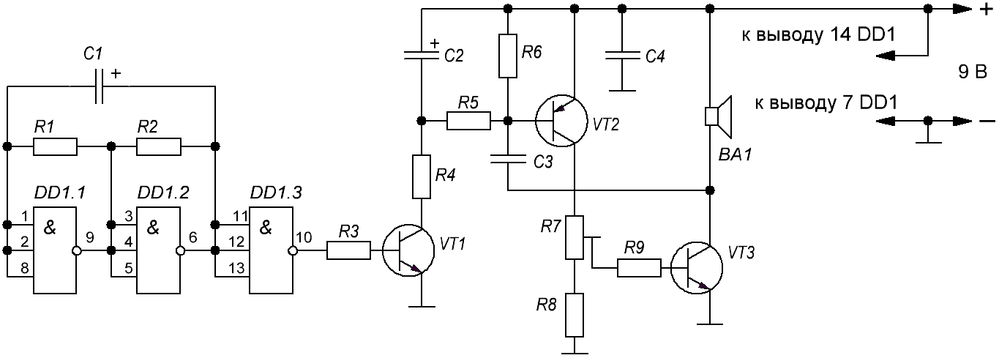

Имитатор звука сирены
Данное устройство имитирует звук сирены — частота сигнала периодически плавно увеличивается, а затем уменьшается и т. д.
Основа схемы (рис. 1) — несимметричный мультивибратор на транзисторах VT2 и VT3. Частота генерации зависит от ёмкости конденсатора С3. Нагрузкой мультивибратора служит динамическая головка ВА1.

Таблица 1
| Позиционное обозначение |
Наименование | Номинал | Кол-во | Замена |
|---|---|---|---|---|
| BA1 | Динамическая головка | 1...2 Вт / 8-16 Ом | 1 | |
| C1 | Конденсатор электролитический | 100 мкФ, 16 В | 1 | |
| С2 | Конденсатор электролитический | 47 мкФ, 16 В | 1 | |
| C3, C4 | Конденсатор | 0,1 мкФ | 2 | |
| DD1 | Микросхема | К561ЛА9 | 1 | |
| R1, R2 | Резистор постоянный | 22 кОм | 2 | |
| R3 | Резистор постоянный | 68 кОм | 1 | |
| R4 | Резистор постоянный | 18 кОм | 1 | |
| R5 | Резистор постоянный | 62 кОм | 1 | |
| R6 | Резистор постоянный | 47кОм | 1 | |
| R7 | Резистор подстроечный | 4,7 кОм | 1 | |
| R8, R9 | Резистор постоянный | 270 Ом | 2 | |
| VT1 | Транзистор биполярный, n-p-n | КТ315Б | 1 | с любым буквенным индексом. КТ3102, КТ312 |
| VT2 | Транзистор биполярный, p-n-p | КТ361Б | 1 | с любым буквенным индексом. КТ3107 |
| VT3 | Транзистор биполярный, p-n-p | КТ815Б | 1 | с любым буквенным индексом. КТ817 |
На логических элементах DD1.1 и DD1.2 собран генератор прямоугольных импульсов. Частота импульсов определяется ёмкостью конденсатора С1 и сопротивлением резистора R1. Логический элемент DD1.3 — буферный.
На транзисторе VT1 собран электронный ключ. Когда на выходе элемента DD1.3 высокий уровень, транзистор VT1 открыт и конденсатор С2 заряжается через резистор R4. При этом изменяется режим работы транзистора VT2 — он открывается больше и частота несимметричного мультивибратора возрастает. При низком уровне на выходе элемента DD1.3 транзистор VT1 закрыт и конденсатор С2 разряжается через резисторы R5, R6 и базу транзистора VT2, который плавно закрывается, и частота несимметричного мультивибратора уменьшается. Транзистор VT1 периодически открывается и закрывается, изменяется и частота мультивибратора, имитируя сигнал сирены.
Громкость сигнала в небольших пределах и режим работы мультивибратора можно изменять подстроечным резистором R7.
Питание генератора и мультивибратора осуществляется от стабилизированного источника питания с выходным напряжением 9 В. Конденсатор С4 служит для сглаживания пульсации на линии питания и подавляют помехи.
Налаживание сводится к подборке конденсаторов С1 — С3. Общую тональность звучания сирены изменяют подборкой конденсатора С3, скорость нарастания и спада частоты — конденсатора С2, а период её изменения — конденсатора С1.